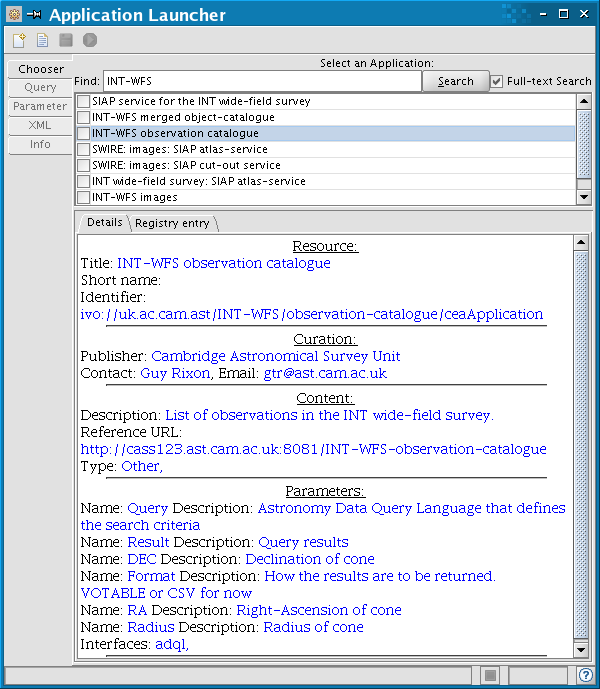
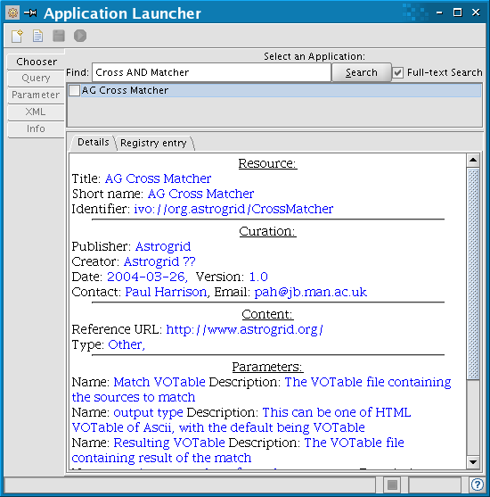

Application launcher
Summary
Use the Application Launcher to execute a single task on the AstroGrid system. A task can be either querying an archive for data or running a tool that, for example, operates on data files or runs a model.
1. Background
Any application that is registered as a Common Execution Architecture (CEA) application on the AstroGrid system can be launched via this interface. Broadly speaking, CEA applications can be grouped into two groups: those that execute queries to data archives (Section 2.1) and those that run a tool (Section 2.2).
2. Selecting the application
Type a search term (case insensitive) into the Find: box and click on Search (more details on options for this registry search can be found at Registry Browser). This will display a list of applications that match the search. Clicking one of the names in the list displays registry information on the application. Clicking the box to the left of the name selects the application, and takes the user to a new window where inputs to the application can be specified. (To go back to the list of applications click on Chooser).
2.1 Querying data archives
Several applications are available to search archives for data. There are three ways in which a user can query for data: ADQL queries, cone searches and SIAP (Simple Image Access Protocol) requests. Depending on the dataset required, one or more of these options may be available.
Note: if you want to search multiple archives of Astronomy data for a specified position in the sky or object, use AstroScope. If you want to search multiple archives of Heliospheric data for a given time range, use HelioScope.
To send a query a data center, use the name of the dataset you require as search term, and view the details of the applications found, by clicking on their names.
2.1.1 ADQL queries
If an application in the list has a parameter described as Astronomy Data Query Language that defines the search criteria, you can query the dataset using an ADQL query. When you select the application you will be taken to the Query Builder window, where you can construct the query and then submit it.

2.1.2 Cone searches
When a Cone Search service is selected, a dialogue box will appear asking for the central position and search radius (usually in decimal degrees).
2.1.3 SIAP
If an application in the list is described as SIAP service, then it is possible to query the corresponding dataset using a standard protocol: the Simple Image Access Protocol (SIAP). Mandatory parameters for a SIAP call are the position in the sky (RA and Dec) to be searched and Size of the search region.
2.2 Tools
If you require a specific tool that operates on the data or runs a model, enter a search term and select it from the list displayed. Documentation on AstroGrid tools can be found at ToolDocumentation.

3. Specifying parameters for the application
You will need to specify input and output parameters for the application. Different applications require different types of input and output. These details are held in the registry and when you select an application, a dialogue box specific to the application is displayed for you to enter the required parameters.
3.1 ADQL queries
If you selected an application that requires an ADQL query as input, you will be taken to the Query Builder.
The output of an ADQL query is a VOTable. By default this VOTable will be displayed in a Workbench window in a user-friendly format, once the query has been executed. If you would like the Votable to be saved into a file instead, click on Parameter, then on the Ref? box to specify a file location either on your local disk or in MySpace.
3.2 Cone Searches or SIAP
If you selected an application that queries for data using a Cone Search or SIAP, you will be taken to a window where you can specify input parameters. Double click on a box to type in it.
The output of a Cone Search or SIAP is a VOTable. By default this VOTable will be displayed in a Workbench window in a user-friendly format, once the query has been executed. If you would like the Votable to be saved into a file instead, click on Parameter, then on the Ref? box to specify a file location either on your local disk or in MySpace.
3.3 Tools
If you selected an application that runs a tool or model, you will be taken to a window where you can specify input parameters. Double click on a box to type in it. If the input parameter you want to specify is a file, click on the Ref? box and select the file (from your Local Disk or from MySpace or from URL reference).
Again use the Ref? box to specify names for output files.
4. Executing the application
Click on the green 'Execute this application' icon to launch the application. This will automatically open a Lookout window, that allows you to monitor progress of the application and display the results. If you launched a query, this will be listed under Queries, if you launched a tool, this will be listed under Tasks.
Author: Silvia Dalla, s.dalla@manchester.ac.uk
Last revised : 14 March 2006